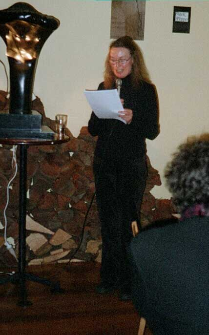
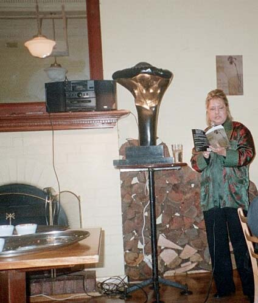

The Weight of Irises
Geoff Page
Radio National (ABC), November
2004
Black the colour
of mourning distinguishes
survivors
from the dead
and in dreams
indicates only
minor misfortune
so violet
is the colour of the soul
according to Dante
who surely saw it
as a shadow before or
after him
or as a vague haze
between his eyes
what then is the colour
of sorrow
the sky on these days
neither blue nor grey
but a kind of empty
white
merely a backdrop
the blank
page white
the colour
of clothes we once
buried the dead in
the colour of calamity
these too-delicate
flowers
on the
table bursting
from their veined leaves
like
trumpets wings
of undiscovered insects
their thin white stamen
so purely white
they are not
to be believed
and soon will be a memory
the shade of separation
the sign of detachment
when will we know red?
‘On the
Phenomenon of Colour’
That poem, ‘On the Phenomenon of Colour’, is
typical of the
best poems in Nicolette Stasko’s third collection of poetry,
The Weight of Irises.
While quite a few of the poems early in the book are fairly subjective,
consciously female explorations which vary from existential despair to
the stresses of domestic life, ‘On the Phenomenon of
Colour’ has an almost Eastern detachment about it. It is an
essay
- but hardly an article for a journal on optics or a philosophy
magazine. Stasko is concerned with the emotional associations of
colour. ‘Black the colour / of mourning’, she says,
‘distinguishes / survivors / from the dead...’ She
is
reminding us very visually of that crucial distinction at funerals -
how all the vertical ones in black are not yet in their coffins like
the horizontal one they mourn. From here, in moods varying from
playfulness to melancholy, the poet goes on to suggest other linkages
between colour and emotion: ‘Violet / is the colour of the
soul’, she says - and ‘a kind of empty
white’ turns
out to be ‘the colour of sorrow’. Here she, almost
playfully, contradicts her opening line about black being
‘the
colour of mourning’. Rather in the manner of Robert
Frost’s
famous poem ‘Design’ Stasko then goes on to compare
the
whiteness of ‘these too-delicate flowers’ with the
‘thin white stamens’ of ‘undiscovered
insects’.
It all leads to the ‘shade of separation’ and is
‘the
sign of detachment’ - not a quality that Stasko is typically
drawn to. And the reason is suggested in the last line of the poem:
‘when shall we know red?’ One hears an echo here
too of the
great American poet, Wallace Stevens, in his ‘Disillusionment
of
Ten O’Clock’ where he has a New England town
‘haunted
/ By white night-gowns’, relieved only by ‘an old
sailor /
Drunk and asleep in his boots’ who ‘catches tigers
/ in red
weather’. Although Nicolette Stasko has now lived in
Australia
for many years her American origins are not forgotten, it would seem.
Other poems in
The
Weight of Irises
which have a comparable objectivity include ‘Plaza en la
Colonia
del Sacramento’ and the poem, ‘Holes’.
The former has
an epigraph ‘after Jorge Damiano’ and may, in fact,
be a
loose translation. In any event it has a surreal, almost metaphysical
strangeness. Why, Stasko says of ‘a grey dove / quietly
absorbing
a small piece of the night’, should she try to describe it.
Rather, she says, ‘let it enter / remain there forever / or
pass
through me / clean as a sharp blade / going somewhere else’.
‘Holes’, the other poem mentioned, has a
central-European
atmosphere to it - with its elemental imagery and its puzzlement at the
metaphysical. ‘a hole dug in the earth,’ she says,
‘is not empty’. Nor is ‘the hole / in
your old jumper
/ the foot through the sheet...’ It’s no surprise
that
Stasko mentions elsewhere, in another poem, that Zbigniew Herbert, the
great Polish poet, is one of her favourites.
At the artistic centre of this book, however, is Stasko’s
sequence ‘Dwelling in the Shape of Things’, already
published as a chapbook by Vagabond. In sixteen sections the poet
meditates on a series of paintings by Cézanne and generates
some
of the most sophisticated and densely-textured work in the book. Stasko
here is concerned to articulate not only her personal response to the
paintings but, more ambitiously perhaps, to create a verbal equivalent
to them, akin, in some ways, to a translation. While some traditional
art critics might well benefit from reading this sequence,
‘Dwelling in the Shape of Things’ is not a piece of
art
criticism or scholarship. It does show, however, that there is more
than one useful and persuasive way of responding verbally to great
paintings.
Unfortunately, not all the poems in
The Weight of Irises
are of the same standard as the ones I have mentioned. Some readers,
for instance, may be less than charmed by Stasko’s
determination
to do without full stops throughout. This technique, which goes all the
way back to Apollinaire in 1912, does sometimes generate interesting
ambiguities and productive mis-readings but more often it simply forces
the irritated reader to go back a line or two to check on the syntax.
Some poems, too, like the first one, ‘Ashes’, fall
away
slightly at the end while others, such as part 2 of ‘Death of
Blue,’ can sometimes finish rather too grandiloquently with a
phrase such as ‘O white despair’.
Like most contemporary Americans, Stasko writes within the free verse
orthodoxy but is more often inclined to the William Carlos Williams
‘thin poem’ than the Walt Whitman
‘fat’ one. In
some poems her lineation seems finely judged; in others it could
probably be rearranged without loss.
On balance though, in its best poems,
The Weight of Irises
fulfils its very considerable ambition - and, despite the awards and
commendations given Nicolette Stasko’s first two books, it is
almost certainly her most impressive collection to date.
Back to top
New
Poetry 2003-2004
Adrian Caesar
Westerly,
Vol. 49, November
2004
Another poet [following
Adrienne Eberhard] whose
precision and
clarity I have always admired is Nicolette Stasko. Her fourth book,
The Weight of Irises,
does not
disappoint. The wonderful art of Stasko’s poetry is to
produce a voice
that seems artless. As I read, I seemed to hear the poet as if she were
speaking directly to me. In this way, the reader is invited to share
intimacies. Though Stasko has always eschewed conventional punctuation,
her lines form rhythmical and grammatical sentences, which sometimes
seem to slide into each other by sharing a phrase. It is a way of
making the reader pay attention to the tensions between the syntax and
the lines, and a method of jolting the reader into awareness at key
moments.
Stasko has a painterly eye, and her interest in fine art is evident in
several poems here. And yet there is never a sense that we are leaving
the world of lived experience to indulge in some abstract or superior
realm. On the contrary, Stasko engages with paintings as she engages
with life, searching for the radiant moments of illumination in the
full knowledge of the darkness. Here is a poem from her sequence
‘Dwelling in the shape of things: Meditations on
Cezanne’:
Is it
possible to represent
our feelings so exactly?
the twisted trunks of
trees mimic
furiously writhing
couples volupte
whose embrace offers
nothing
but violence
not even in the pale
violet blue of
the sky
the vulnerable green of
the leaves
and grass is
there peace or tenderness
only desire
a leaping dog with bared
teeth
the screams of a woman
being raped
or giving birth
are the same
we would rather believe
these figures might be
dancing
and that the one who
bends to wake
the sleeper
does so gently
Stasko is equally capable of telling a story, offering a dramatic
vignette or pursuing a meditation. She is various, subtle and clever. I
cannot do the book justice in this small space, better that you should
read it for yourselves.
Back to top
What
We Actually See: new poetry
Kerry Leves
NSW poet and critic
Overland,
No. 175,
Winter
2004
The quietness - product
of tonal
control, a deliberate use of reticence and silence - belies a fiery
emotional intensity (read the poem sequences ‘Days’
and ‘The Sea
Horse’) and a formidable commitment to purpose. That purpose
might be
read as an exploration of subjectivity that omits autobiography, puts
memoir on hold. The self of ‘Some Windows’ begins
with what is visible
from the window of a hotel room - various people, doing various things,
separated in space, contemporaneous in time - but writes these
observations as a meditation on the subject - the subjectivity - that
defines itself through the visual/verbal constructions.
Some
windows
in all the
time we watched
never
showed
a single
sign of movement
and might
in fact
have
lately been
abandoned
by the dead
their pure
white
blinds
drawn down
blank
indescribable
This reflexiveness makes
a
counterpoint to another, less overt theme, which the book’s
title hints
at: subjectivity can’t ‘know’ (or
‘show’) itself, except through
interaction with others, who also constitute subjects, and thus mortal
lives. The struggle - and this is an agonistic text, its spare lines
constituting an impeccably ironised surface - becomes that of keeping
faith with what is, while acknowledging its delimited witness. My
exposition may sound like the Heisenberg Principle revisited, but the
poetry is fine, imagistic, subtle and searching. And it gives weight to
things - not only irises
withdrawing
all the
blue
from the
world
but, by the shoreline of a beach,
two
eels baking
their
living flesh drying
into
leather straps
Immediately after these
lines it
is noted, unpretentiously, that ‘we could have worn [them]
for belts’:
what ‘is’ (dying) is contiguous with everything
else that ‘is’ (living
and/or dying). The poem-sequence ‘Dwelling in the Shape of
Things’, is
a meditation on paintings by Cezanne, the post-impressionist artist
whose contribution is usually discussed in structural terms.
‘Dwelling’
inscribes each of its chosen paintings with the undernotated
subjectivity of a viewer, thus breaking out of the art-history and
aesthetic frameworks around the concept of
‘Cezanne’. The sequence
keeps faith in its own way with the painter’s concerns:
‘...whatever
may be our temperament, or our power in the presence of nature, we have
to render what we actually see, forgetting everything that happened
before our time’, Cezanne wrote. Stasko’s poem
replies contrariwise to
the implicit (self)idealising of the artist, while empathising with his
project:
we
would like to go there
...to be
dissolved in a
delicate
geometry
all things
becoming equal
Back to top
Poetry
Survey
Oliver Dennis
Island, No.
96, Autumn 2004
The robust maturity
of the poems in
The
Weight of Irises
suggests that
Nicolette Stasko may be working at the height of her powers.
Particularly impressive is Stasko’s careful handling of
words, her
instinct for knowing when to stop and when to keep going. Take the
concluding lines from ‘Ashes,’ for example, which
mourns the declining
influence of poets: ‘who will be here / to help us see? / to
be the
mole fo the wind / reminding us of death’s bright clothes /
pointing
out / where the stars used to be / from under the glare of so many /
busy street lamps.’ And there is her startling description,
in ‘A
Single Ascension,’ of a visit to an Italian tourist site:
‘cathedral
steps / are an alabaster bed / of chambered ammonites / curled like
ladies’ ears.’ Elsewhere, Stasko’s
phrasing is equally poignant and
memorable: her response to her young daughter, for instance
(‘a small
white owl / sits lightly / on your breast’), and the glorious
understatement of ‘complicated shadows’ in 'Plaza
en Colonia del
Sacramento.’ Very often, Stasko contrasts personal feelings
of
emptiness with the abundance of the natural world: her poetry has a
marked rueful quality. Yet, there is still much in the book celebrating
life's pleasures, in particular those of food and good living.
Back to top
Small
Still Beautiful
Barry Hill
The Weekend Australian,
14-15
February
2004
Nicolette Stasko's
The Weight
of Irises sustains a sensual lament
about things ephemeral and mortal. The settings are often exotic, the
poet’s voice solitary, melancholic. The book coheres, as do
the best
slim volumes, so that overall you experience a poet’s
uniquely
developed journey.
Back to top
Metres of Wit, Without Explanation
The
Weight of
Irises
Gig Ryan
The Age, 31
January 2004,
Review (pg.4)
Nicolette Stasko’s
The
Weight of Irises reveals a very different talent from
Farrell’s [
ode,
ode],
although both, Orpheus-like, render their worlds into
existence.
In Stasko’s work, poetry is an exhumation, digging out the
truth
of things. Enjoying the mud crab she has cooked ‘in
the
foil light / of morning’, for example, she valiantly shows
the
ferocity and self-serving deception in human nature, while
‘Death
of Blue’ explores meaning in the natural world as well as the
futility of such investigations: ‘twelve blue iris /
incandescent
/ in the morning light seemed / a sign of something / a gift from the
world / unasked for / unmortgaged / send a message I beg / we are! / we
are! / they sing.’ Some poems investigate a
heightened
consciousness aroused by temporary solitude or break from routine,
others are full of the sharp observations travel induces, where she
sees houses ‘shunning the dark swords of trees’ or
remembers discovering a wounded seahorse with ‘the sky rinsed
of
stars’. In others, opportunities are politely lost
-
‘a student reading / at a desk all day / I wanted to call
across
to him / life does not last that long / but of course never
did’. Stasko generally uses short lines, which in
these
poems seem to pin the world into place, but her many fine descriptions
and insights are sometimes lost in rather loose unstructured poems.
Back to top
Could
a Poem
Talk to a Lettuce (?)
Noel Rowe
Southerly,
Vol. 63, No. 3, 2003
Those who admire
Nicolette
Stasko’s poetry - its painterly eye,
imagistic power, skilful lineation and honest voices - will be
delighted by The Weight
of Irises.
It contains so many powerful poems. I particularly liked the precise
humour of ‘January 18th’, the austere sadness of
‘Long Distance’, the
teasing insight of ‘Notes of the Pillow’, the
strong and shifting
currents of ‘Days’, the vagrant spirituality of
‘A Little Shelter’,
the savoured sensuality of ‘Mudcrabs’, the
emotional exposure of ‘The
Sound’. And I have not yet mentioned the poems based on
paintings - it
is
good to find that ‘Dwelling in the Shape of
Things’, originally
published by Vagabond Press in its rare object series, is reprinted
here. There is hardly a word wasted (I’m not sure that the
last three
lines of the very beautiful ‘December 31st’ are
necessary); the images
arc precise and the emotions exact. This is Stasko’s best
collection so
far.
Tbe Weight
of Irises
is a
book in which the apparent contraries of iris
and ash, beauty and ruin, revelation and loss, can live together.
‘Ashes’ is, therefore, in appropriate and effective
opening poem.
Beginning with a vision of how ‘All over the world / poets
are going
tip
in flames,’ it ends:
who
will be here
to help us
see?
to be the
mole of the wind
reminding
us of death’s
bright
clothes
pointing
out
where the
stars used to be
from under
the glare of so
many
busy
street lamps
While the image of
‘death’s
bright clothes’ introduces a concern for
negativity (absence, silence, and loss are often recognised), the
gesture of ‘pointing out/ where the stars used to
be’ resists the way
negativity has become something of an easy, evasive trope. It keeps
desire uncomfortable. This is poetry that wants presences that are
tangible, tactilc, faintly sacramental. ‘After Many Sleepless
Nights’
(a very impressive poem) knows that ‘death is all
around’: cancer is
growing, passengers are getting off a train, fish have disappeared from
a pond, fires are making ash. In the middle of all this:
black
currawong
among the
fallen red
leaves
between the black
bodies of
the trees
the
persimmon blazes
all its
golden flames
catching
and holding the wind
I am
typing out pain
have
almost forgotten it now
another
voice is
speaking
The poem closes by
explicitly
reminding us ‘how terrible the art / of
resurrection ‘-a risky move, but one that works, partly
because the
reference is left slender, and partly because the poern has reworked
tile vocabulary of belief, referring lightly to dark reflections,
mysteries, sacrifices and loss, and placing images of death next to
those of birth. Quite a few of the poerns in The Weight of Irises
set
out to take experience through to this depth. ‘The Sea
Horse’, in
particular, does a very interesting variation on the theme of
resurrection, showing how an image, a truth, ‘will not / be
buried’,
and
settling, through that lineation, between affirmation and unease.
‘December 31st’ somehow manages to evoke the desire
for angels after
declaring ‘there are no angels / hovering over / the houses
in Glebe’
and
taking up the search for ‘true’ words
‘not fooled by the noise / of
clapping mistaken / for wings’. ‘Seven
Devils’ tells the story of a
woman whose mind, body and blood threaten the religious establishment,
if woman who is therefore said to be possessed; as Stasko tells it, the
narrative of exorcism is gradually taken up by images of crucifixion.
The speaker also seems to know that the Madonna has been used against
her:
the
cool Madonna waits
around her
head gold glimmers
in the
shivering light
she does
not answer me
even if
I were to
ask
Stasko is fundamentally
a
spiritual poet, in the sense that she is
writing her way between supernatural list and empiricist notions of the
real. She may deny a certain kind of angel, and she may use words like
‘resurrection’ or ‘ascension’
in ways that leave their traditional
meaning hanging open, but she also insists on honouring the
body’s
intensities and turning experience over at its edge. In
‘Dwelling in
the Shape of Things’ the ‘round reddish
gold’ apples are only as
substantial as the ‘deep shadows’ they make
‘on a sail of white cloth/
like holes in a field of freshly fallen snow’; the woman
holding ‘warm
fruit’ is
leaning
towards the centre
giving
or taking away
and what
difference between
such
gestures
in the end?
Although it knows the
satisfactions that come from paintings, flowers,
reading, food, relationships, Stasko’s poetry realises these
are all
edged with emptiness. It is still hungry.
Back to top
The
Shape of Things
Jennifer Strauss
Australian Book Review, No. 255, October 2003
Adrienne Eberhard
Agamemnon’s Poppies
Nicolette Stasko
The Weight Of Irises
‘Dwelling In
The Shape Of
Things’ is the title of Nicolette Stasko’s
sequence of sixteen elegantly executed ‘Meditations upon
Cezanne.’ It
could, however, serve as an appropriate epigraph to both these
collections. Given that the natural world is Stasko’s and
Adrienne
Eberhard’s main locus
for exploring and responding to ‘the shape of
things,’ each could be
described loosely as a ‘landscape’ poet, but the
character of their
work is neither nationalistic nor naturalistic. They write essentially
of their experience as sentient beings inhabiting, and intimately
responding to, the world
of things.
In doing so, they contend with mysteries that dwell in these
worldly
shapes. The difference in the tonal and intellectual complexities of
their responses is characteristic. Eberhard is the more exuberant. She
seems too confident of the independent reality of ‘The speech
of the
world / whispered
and nudged on the wind’ (‘Coastlines’) to
entertain the perceptual
doubt
voiced by Stasko in ‘Is it true that our eyes see what / our
hearts
have
conditioned?’ (‘Dwelling in the Shape of
Things’). The resonance of
that
question depends in part on its contested relationship to the calm
assurance with which she speaks elsewhere of ‘everything held
together
/ by an eye’ (‘One Return’).
It is instructive to compare poems in which each pays respect to
the power of non-literary art to shape the world. In the richly
textured ‘Ceramics/Braille,’ Eberhard’s
celebration of the perceptual
medium of touch reaches a triumphant conclusion in:
Raised
to exactness of fingerprints,
the whole world is lit
transparent
until muteness speaks in
many
tongues;
the heart’s
pulled
taut, listening to
the world spoken through
these
hands.
Stasko’s perceptual medium is the eye, and, while it can
offer
enchantingly direct contact with the world through a still life in
which ‘a chaste kitchen table with one shy drawer / humbly
balances it
all,’ at other times entry to the painted landscape is
incomplete:
the
mind builds a bridge over dark blue water
but cannot walk on it
distance remains
we stay forever on the
peopled
shore
content with the view
through a window
If both commit to immanence, the refusal to concede to
transcendental notions of art as ravishing us from the world has very
different expressive outcomes, at least in these passages. But once
again, it would be dangerous to take the muted, somewhat melancholy
acceptance of reality found in
the cited section of ‘Dwelling in the Shape of
Things’ as more than one
definitive moment in the experience of a poet who also writes of waking
after illness to ‘a gift from the world’ in the
shape of twelve blue
irises
that
fly
and settle like
bright swallows
around the room
send a message I beg
we are!
we are!
they sing
‘The Death of Blue’
It is no coincidence, I think, that Stasko writes of thinking as
she
watches a beloved daughter: ‘I could wish you / only one eye
to see /
what is beautiful and good / but that would be a lie’
(‘Three Days’).
Stasko’s sense of how the world is may be shadowed by the
personal
grief identified in ‘After Many Sleepless Nights,’
where a sister’s
mind is ‘sprouting tumours / like mushrooms’. But
there seems something
more fundamental in her reflection: ‘How little we know about
one
another / each locked in our own delicate
case / surrounded by dark scenery.’ Despite benign moments
that move
her
to declare benediction on ‘the other people in the house /
who tread
lightly
as ghosts / but are corporeal beings’
(‘Days’), the general sense of
faulty
connections is made specific in her precise evocation of that
all-too-familiar
situation, the dutiful visit to what ‘should be
home’.
where
my father sits deafly
reading the newspaper
in the zinc light of the
TV
screen
my mother packing up the
plastic
Christmas tree
a corpse to be gotten
rid of
such a mess she says
Stasko’s melancholy is tempered by too much intelligence and
wit
to
yield to sentimentality or self-dramatisation, and her take on
alienation can be entertainingly sardonic, as in ‘On the
Economy of
Crying’. ‘When
I cry it is never enough when you cry it is always too much’.
Eberhard’s poems about human relationships - the love poems
of the
early part of the collection, and the later poems about pregnancy and
children - certainly do have more of the beautiful and the good than
otherwise. ‘In the Bath’ is as lovingly lit and
detailed as a Flemish
domestic study, with the adult body ‘anchored in the shallows
/ rocking
and keeling in the soap- / water; homely as a house boat’,
and she
depicts an infant body with ‘small pink fists colliding, /
toes
pointing in all directions’. It is not that Eberhard is
unaware of the
potential for absence in every beloved presence, or even of the
possibility of existential loneliness, but she is no ironist, and so is
free to commit herself to the unqualified richness of lines like:
Honey
pools on my spoon,
rolls of redness, sticky
as the
sun;
for a moment, beehive
tombs
and poppies crush in my
mouth -
Mycenae rises rich and
oozing,
a gold memory dissolving
on my
tongue.
‘Mycenae’
Eberhard’s language seems untrammelled by Stasko’s
edgy awareness
that, despite the plentifulness of words,
the
problem is
to choose the true ones
without an
angel’s help
not fooled by the noise
of clapping mistaken
for wings
Just occasionally, there seemed to me a bit too much of ‘the
blood-rush
of myself’ (‘Ariel’s Realm’) in
Eberhard’s writing, which may be why I
most enjoyed those poems where the energy of her image-making was
shaped
by one of two possibilities. One is the adoption of a fixed form such
as
the sonnet: for instance, I found ‘Delusions’ a
much more concise, and
hence forceful, poem of childhood desires and inadequacies than the
less
shapely ‘The Wedding Dress.’ The other is
dramatisation, which is rich
in its possibilities for directing imagistic energy. The five
‘Cleopatra
Poems’ are pithily sexy, but for me the best writing in the
collection
is
in ‘Lines from the Black Sea,’ a sequence spoken by
the exiled Roman
poet
Ovid. Eberhard’s understanding of, and responsiveness to, the
physicality
of language movingly informs the exile’s longing:
...
for the polished glide of Latin,
smooth as skinned and
pitted
grapes
exploding in my mouth,
the sensuous rub of
words,
silken as the sheen of
oil over
skin.
Each of these collections has much to offer. A preference for one
over the other may depend largely on the reader’s
temperamental
disposition. But as ideal readers, we ought to be capable of taking
pleasure in the different qualities, the varied balance of passion and
poise in each. Besides, the pair make a handsome addition to the
bookshelf. Black Pepper is to be congratulated not only for its
continuing commitment to the publishing of poetry, but also for
matching quality production to fine poetry.
Back to top
Four
Australian poets with a variety of styles
John Mateer
The Canberra Times
11 October
2003
Nicolette Stasko is a
well-known
name in Australian poetry... she is a poet who has an interest in
adhering to the use of a single style and in exploring the various
possibilities it has to offer. Her interest in the imagist poem with
its focus on image, slender line and intimate, precise voice means that
her work is able to develop a certain engaging emotional intensity that
escalates the deeper the reader goes into the book. As with much
imagist poetry, in Stasko’s work there is a real pleasure to
be found
in ‘mere’ description, in sensuality and colour -
whether in the eating
of mudcrabs (‘Mudcrabs’) or a meditation on black
(‘On the Phenomenon
of Colour’) - as much as in the texture of the voicing. There
is, as is
often the case with imagist poetry - in Australia its best-known
exponent is Robert Gray - a tendency towards an almost-Japanese
aesthetic in which the moon, flowers, dreams, birds, seasons and
colours are drawn to the reader’s attention with a clarity
that serves
to emphasize the lack of clarity and certainty that is our usual,
melancholy experience. Stasko is mindful that that is one possibility
for her poetry, and that there are other emotions, other observations.
Her use of sequences often enables her to meditate more deeply, as is
the case in ‘Dwelling in the Shape of Things: Meditations on
Cezanne’,
or to construct a kind of narrative, as in ‘Days’.
It is in the expanse of her emotional range that she exceeds her
style’s usual limit and succeeds in producing a gentle,
caring poetic
voice that is always appropriate to its concerns.
Back to top
Launch
Speech


Beverley
Farmer (left) and Nicolette Stasko (right)
Beverley Farmer (author)
You may be wondering
what
someone with a background in fiction is doing
launching a book of poems. The reason is friendship.
I met Nicolette before I read her, though only just in passing, in
the
crush of the Malthouse, you know what it’s like, at the
Melbourne
Festival in 1992. Her first book had just been launched and it flaunted
a bold name,
Abundance.
I
remember thinking, What a cheek! It was all right, though, she got away
with it, the book lived up to its name. In the Deakin University
Library catalogue, incidentally, it’s classified as
‘multicultural
literature’ so I suppose it’s worth mentioning that
she was born in
Pennsylvania and has spent half her life in Australia, both, of course,
very multicultural places.
They’d got over it, anyhow, by the next one, called
Black Night With Windows.
these windows have no blinds
to block the night
they are paintings black
with
void
glittering cold
As for the new book, everyone I’ve mentioned it to has loved
the
title
and the puzzle of it. We hardly ever see each other but over these
eleven years we’ve become friends through letters. Sporadic
letters, a
writing friendship. I’ve forgotten how it started. From the
beginning,
a letter from Nicolette would spark something off, throw light on
something I was obscurely mulling over. We were soon aware that we had
a common ground and a similar way of seeing. We see eye to eye. Another
day, fishing for words to write to her about something I’d
never put
words to until then, I’d find there was more to be said, much
more, a
new departure. A poem can work the same way, a flash lights up
something in the darkness inside the reader, not necessarily on the
first reading.
The poems in The Weight of Irises have smooth surfaces. Just under
the
surface are images. They are above all poems of observation. They feel
open, even intimate, without any seeming to confide, let alone confess
- what’s to confess? beyond the human condition? - as if we
are
overhearing them as we go down the page. They feel simple because they
are so plain-speaking. But when was it ever simple arriving at such
simplicities as these?
When it came, the book - rescued just in time from my rainy
mailbox – I
looked at the beautiful, sultry, sombre cover and opened it up; the
poem on the page just happened to be ‘Death of
Blue,’ about irises. Not
the first poem, I hardly ever start a book at the beginning, at the
first dipping-in stage. Not the title poem either, as it happens.
Eyes
open
after four days of
fevered sleep
a crown of candles
burns on the dresser
twelve blue iris
incandescent
What came up in mind was a labour ward a long time ago where
I’d
just
given birth, a rough birth for us both, and I’d been left
lying there
in my own sweat and blood on the bed for a couple of hours, forgotten,
feverish and as cold as death. I was thinking I might die like that,
drift off, stop breathing, when a nurse came in and slapped a sponge
over me, the dried blood, skin coming back to life, and dressed me in a
blue nightie and combed my hair. My husband had arrived and was
demanding to see me. Where’s the mum, I imagined the nurses
asking each
other, oh she’s not still in the labour ward is she? My
husband had his
brother with him, in a great fluster of Greek and broken English, and
only the baby’s father was supposed to visit at this stage if
anyone
could work out which one was which, until they gave up and let them
both in. And there they were, beaming, and my husband was bearing
irises, twelve blue and gold irises. They lit up the corridor. My son
was a winter baby. He was so battered I wasn’t allowed to see
him for a
full twenty-four hours. In his place at my side were irises.
By the time I did see him at last, and he was intact, I’d
been
lying
awake with a head full of horrors, the irises had become heraldic, they
were talismans, torches for Persephone, my own Bavarian Germans. All
forgotten, of course, since I was holding the baby.
What is it about these poems? Simone de Beauvoir put it well,
discussing Colette as a writer: the public, she wrote, reads with eye
and thought turned inward. We all know how every now and then a word,
an image, will bring the past flooding back. What was it about this
poem that touched my memory off as if it were yesterday? I
don’t know.
I’m not sure that we ever know. It was a while before I got
on and read
the rest of the poem. These are poems that let you read that way, with
eye and thought turned inward. It’s the way the faintest
brush of the
fingers on a touch screen will make images spring up, colours,
distances, under your fingertips. Memories, as slippery as water, or
dreams, appearing out of the dark for a moment on the screen of the
mind’s eye. It is like a dream in many ways, a good poem when
it gets
through to you that sense of being in two minds. One mind is
remembering having read this poem before, remembering reading it as you
read, and the other behaving as though it has never met this poem, this
dream, before in its life. In two minds in another sense too: your own
mind and the poet’s. You’re getting a double image,
or multiple, a
chord, or discord; and still the poem is new every time, while becoming
more and more familiar.
I avoid talking about poetry as a rule, there’s always the
fear of
smothering it with too many words that are only about it and not it,
and are wide of the mark. Losing touch with what it says. Rubbing and
questioning the bloom, as T.S. Eliot’s Lady says in her
Portrait. Not
that Nicolette’s poems are fragile. They can take it,
they’re robust.
They may not look it but they’re solid. They’re
clear.
She writes in her own voice, sometimes in another persona. She
writes
skeins of poems in sequence. She writes a lot about paintings
there’s a
beautiful sequence of sixteen short poems on Van Gogh, called
‘Sun Upon
Sun,’ in her second book,
Black
Night With Windows. And here there’s a sequence
of sixteen
denser poems called collectively ‘Dwelling in the Shape of
Things’ and
subtitled ‘Meditations on Cezanne,’ meditations
both on and under his
surfaces and her own.
Looking at paintings is a large part of our common ground.
I’ve
spent
all the time I could in recent years in galleries. I’ve
become more and
more aware of the importance of seeing the original, the painting
itself, not a reproduction, however faithful. Often they’re
under
glass, of course, so you’re seeing the original half lost in
a haze of
reflection, of gloss and flare, but even then you can dodge around and
see canvas, see brushstrokes in slabs or threads of paint that glisten
like fine hair, just as they were laid on once by the
painter’s very
hand.
Poetry is different, of course. But not all that different. Even
for
someone like me, almost entirely oriented to the visual, it’s
illuminating to hear a poem read aloud, ideally by the writer of it.
Better still to follow it down the page while it’s being
read, right
there on the page and at the same time in the voice of the writer. We
all form our sentences, our phrases and lines so that they sound like
us. Made in the mould of our habitual tone, worked over until they
sound ‘right’ to us. Hardly any poems come out
perfectly in tune first
go, as far as I know.
So I’ll leave the reading to Nicolette. This will be the
first
time
I’ve heard any of her work read out in the voice it was made
for,
unless since I’m familiar by now with her voice, after all in
my mind’s
ear.
This is a book best taken slowly. Maybe that’s true of all
good
poetry.
It gives itself slowly, in a quiet voice, measured, falling drop by
drop, plain-speaking, lucid, leaving silences and gaps in itself,
pauses for breath, breath of course having its own weight and giving
its shape to the phrase, the line, the stanza.
It’s always something to celebrate, the coming into being
after
long
labour, a new living and breathing book in the world. I’m
very happy to
have had the honour of wetting the head of this one tonight and
I’m
sure you’ll all join me in wishing
The
Weight of Irises a long and abundant life.
Back to top